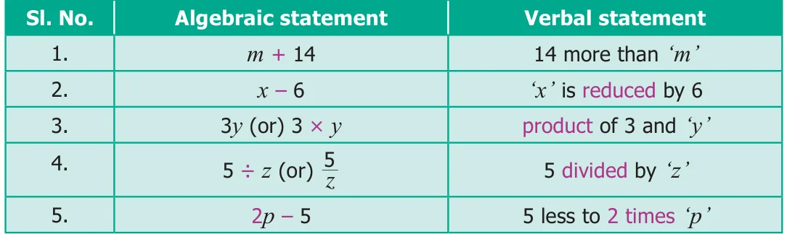
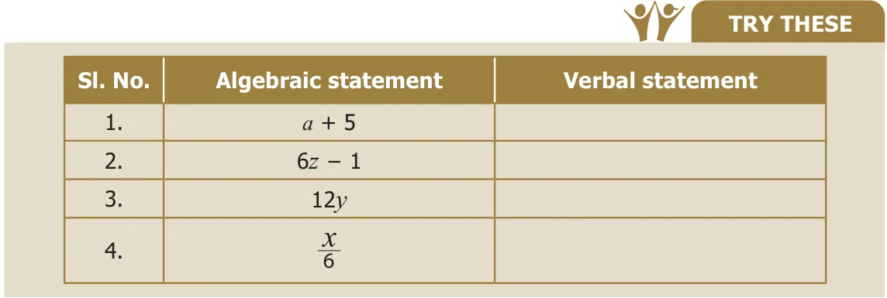
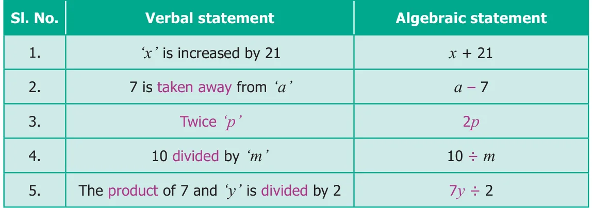
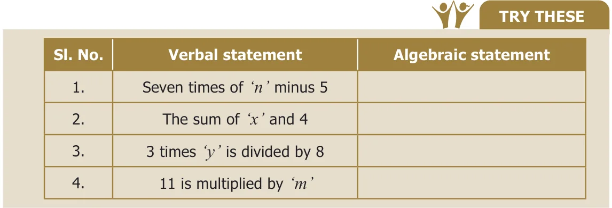

Consider that there are 'n' number of apples in a basket. If 5 more apples are added, what will be the total number of apples in the basket now?
The total number of apples can be easily framed into an algebraic statement as 'n + 5'. This algebraic statement 'n + 5' tells that, whatever be the number of apples you had earlier, there are 5 more apples now in the basket.
- Suppose there are unknown number of people in a bus, say 'x' and if 2 more people get into the bus, then there will be 'x + 2' people in the bus.
- There is a patty of butter which weighs 'w' grams. If you cut off 100 grams from it, you will have 'w - 100' grams left.
- If you start with a number 'y' and then double it, you can write it as '2y' (you know, '2y' means 2 multiplied by y).
2.4.1 Converting Algebraic statements to Verbal statements
A few examples are given in the following table.

Likewise, verbal statements can be converted to algebraic statements as follows.

2.4.2 Converting Verbal statements to Algebraic Statements
A few examples are given in the following table.

